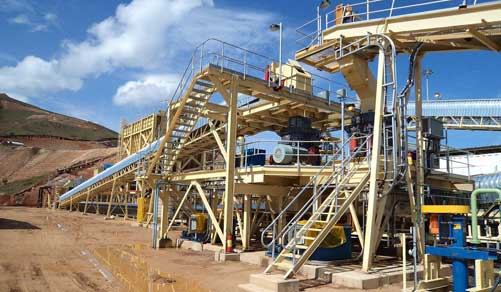

- LM vertical mill is the only mill with the drying system of hot blast stove. And its drying ability is good, solving the problem of the high humidity materials, saving energy.
- By adjusting the temperature of hot air can meet the requirements of different humidity material grinding.
- The automatic control system can realize remote control. The operation is simple, and reliable.
- Sealing pressure system makes that there is no dust, clean and environmental protection.
- The equipment's vibration is small, and its noise is low.
- Set crushing, drying, grinding, grading and conveying into a whole. The layout is compact, covering an area of only 50% for ball mill system.
- The grinding roller and the lining board are made of high quality material, and the service life is long.
- The device can open layout, saving the investment cost.
- The residence time of material in the mill is short. It is easy to detect and control the product size and chemical composition, reducing duplication of milling, making product quality more stable.
| Model | LM130K | LM150K | LM170K | LM190K | LM220K | LM130M | LM150M | LM170M | LM190M | LM220M | LM130N | LM150N | LM170N | LM190N | LM220N |
| Wheel diameter(mm) | 1300 | 1500 | 1700 | 1900 | 2200 | 1300 | 1500 | 1700 | 1900 | 2200 | 1300 | 1500 | 1700 | 1900 | 2200 |
| Output (th) | 10~28 | 13~38 | 18~48 | 23~68 | 36~105 | 10~17 | 16~22 | 20~30 | 26~40 | 35~50 | 5~14 | 7~20 | 9~27 | 12~30 | 18~55 |
| Finish fineness | µm | 170~40 | 170~40 | 170~40 | 170~45 | 170~45 | | 170~45 | 170~45 | 170~45 | 170~45 | 170~45 |
| Mesh | 80~400 | 80~400 | 80~400 | 80~325 | 80~325 | | 80~325 | 80~325 | 80~325 | 80~325 | 80~325 |
| Coal powder fineness (R0.08) | | 5~20% | 5~20% | 5~20% | 5~20% | 5~20% | |
| Coal powder moisture (%) | | <1% | <1% | <1% | <1% | <1% |
| End product moisture (%) | ≤1% | ≤1% | ≤1% | ≤1% | ≤1% | | ≤1% | ≤1% | ≤1% | ≤1% | ≤1% |
| Grinding material particle size D80 (mm) | <10 | <10 | <10 | <10 | <10 | <10 | <10 | <10 | <10 | <10 | <10 | <10 | <10 | <10 | <10 |
| Grinding material max feed size(mm) | <38 | <40 | <42 | <45 | <50 | <38 | <40 | <42 | <45 | <50 | <38 | <40 | <42 | <45 | <50 |
| Moisture of grinding material not to dry (%) | <4% | <4% | <4% | <4% | <4% | | <4% | <4% | <4% | <4% | <4% |
| Matieral moisture of into mill (%) | | <15% | <15% | <15% | <15% | <15% | |
| Moisture of grinding material need to dry (%) | 4%-15% | 4%-15% | 4%-15% | 4%-15% | 4%-15% | | 4%-15% | 4%-15% | 4%-15% | 4%-15% | 4%-15% |
| Into mill air temperature (℃) | <350 | <350 | <350 | <350 | <350 | <350 | <350 | <350 | <350 | <350 | <350 | <350 | <350 | <350 | <350 |
| Out of the mill air temperature (℃) | 70-95 | 70-95 | 70-95 | 70-95 | 70-95 | 75-95 | 75-95 | 75-95 | 75-95 | 75-95 | 70-95 | 70-95 | 70-95 | 70-95 | 70-95 |
| Raw coal hardgrove grindability index (HGI) | | >55 | >55 | >55 | >55 | >55 | |
| Main motor power (kw) | 200 | 280 | 400 | 500 | 800 | 185 | 250 | 315 | 400 | 500 | 200 | 280 | 400 | 500 | 900 |
| Contour dimension | Length (mm) | 5520 | 6550 | 7170 | 7580 | 7920 | 5520 | 4200 | 4700 | 7580 | 7670 | 5520 | 6550 | 7170 | 7580 | 7920 |
| Width (mm) | 2500 | 3070 | 3460 | 3320 | 4870 | 2500 | 3900 | 4500 | 3320 | 4660 | 2500 | 3070 | 3460 | 3320 | 4870 |
| Height (mm) | 7060 | 7560 | 8300 | 8960 | 12280 | 7060 | 7100 | 8300 | 8960 | 11280 | 7060 | 7560 | 8300 | 8960 | 12280 |
LM series vertical grinding mills are widely used in grinding non-flammable and non-explosive materials under 9.3(the Moh's hardness), such as grinding quartz, feldspar, calcite, talcum, barite, fluorite, iron ore, copper ore quartz, slag, cement clinker, zircon sand, fly ash and carborundum, coal, etc.
Supply the most current design and technical expertise;Supply parts sales and training service far beyond the initial sale;Your profits with quality parts and expert service.
Working Principle:

1) This crusher uses motor as its power. Through the motor's wheels, the eccentric shaft is driven by the belt and the belt wheel to make the jawstock move by a regulated track.
2)The angle between the toggie plate and jawstock will become large as the up of the jawstock. This will push the moveable jaw plate towards the fixed jaw plate,which can realize the multi-crushing of the materials.
3)The angle between the toggie plate and jawstock will become small as the down of the jawstock. The moveable jaw plate will leave the jaw plate at the presure of the tension rod and spring ,meanwhile ,the final products will be discharged from the dischargeing opening.